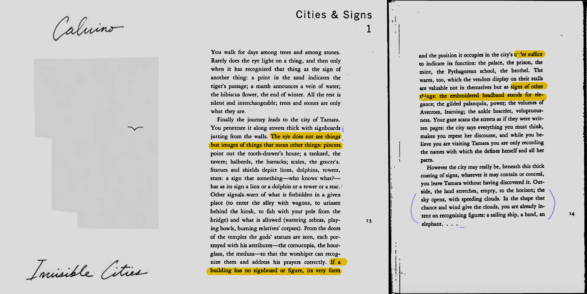

I went to the New York Public Library on Fifth Avenue and visualized my experiment with Blender. I used many metaphors to exaggerate my sense of sight, smell, and hearing.
For example, the utterly different lighting in different scenes, the element of water symbolizing the fountains in the hallway, the moment of getting lost while climbing the stairs, etc.
This project is inspired by Calvino's book, Invisible Cities. In Calvino's description, Marco Polo used numerous metaphors to symbolize the appearance and atmosphere of different cities, making them alive and breathable.

From my point of view, the significance of New York Public library's existence is no longer a "library" but a tourist attraction.
It had turned into a simulacrum. In my narrative, The existence of books is significantly reduced.
"The spectacle is not a collection of images, but a social relation among people, mediated by images." (Guy Debord, The Society of the Spectacle)